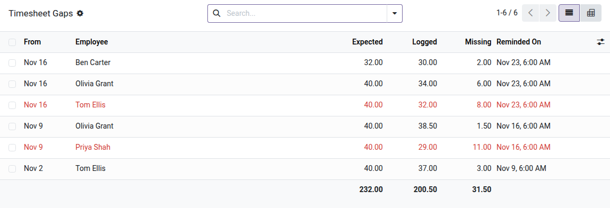
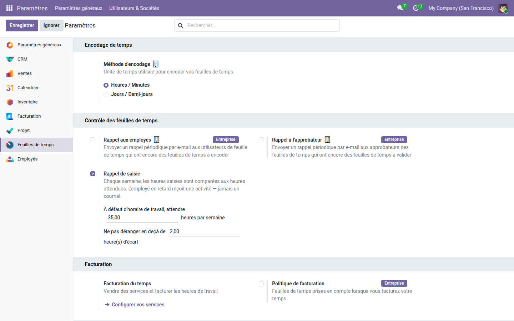

The table of missing timesheet hours, week by week, and the reminder that goes with it.
Odoo Community sends no reminders: the two timesheet reminder checkboxes are reserved for the Enterprise edition. An empty timesheet stays empty, and the project manager only notices at invoicing time, when nobody remembers what they did three weeks earlier.
Expected, logged, missing, for each employee and each week, with totals. The first row expects forty hours, not thirty-eight: that is this person's schedule, not a company average.

Just below the two core reminders marked “Enterprise”, which do nothing on Community. The default expected hours and the tolerance are set in the same place.

Collecting the hours is a start; planning and invoicing them comes next. The OdooSkills range covers resource planning, Gantt chart schedules for projects and manufacturing, and project segregation between teams. Full catalog: apps.odooskills.com.
LGPL-3 license — compatible with Odoo 19.0 Community and Enterprise. Support : apps@odooskills.com.